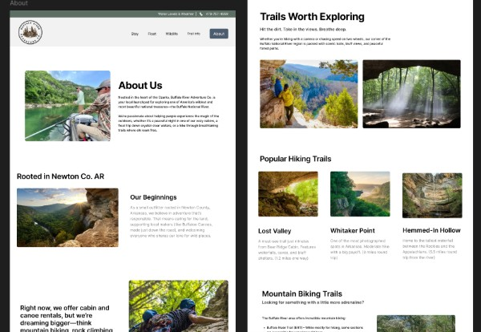
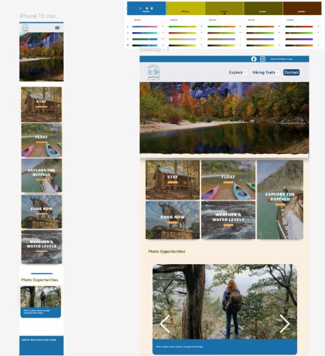

Final Project & Program Reflection

Whew. This final project wrapped up a long, eye-opening semester for me. Coming into this program as a working professional who’s already been through grad school put me in a very different headspace than many of my classmates.
When Sarah joined us during the second semester, the communication exercises finally felt useful and substantial. Practicing things like the compliment sandwich in front of people helped a lot. Her structure for our second-semester group project, especially writing out group norms, set us up well before we even touched the capstone.
Communication Note
I’ve realized I need to brush up on more formal, business-style interviewing. I’m great in casual, conversational settings, but I’m less polished in those buttoned-up MARCOMM environments. I used to be good at that mode, but I’ve relaxed over time and let more of my personality show. I still prefer workplaces where I don’t have to be overly formal, but I also know I have to switch gears when needed—especially since I’m often seen as the “cute little tech writer” and have to work a bit harder to show I’m serious.
There’s also real competition out there. My new portfolio gives me more of an edge, and wrapping up the program with something that strong was huge for me. I’m proud of how it turned out and of the presentation practice I got along the way. I’m much more structured now when I present, and it shows. I intend to use some of what I learned in formal interviews.
Feeling Out of Place
There were plenty of times I felt out of place or even a little “uncool,” especially when I was one of the few actually listening to Bruce’s lectures and interacting. That, mixed with my existing experience in web work, may have made me come off as a know-it-all to some undergrads. I also wonder if being perceived this way contributed to rubbing Dustin the wrong way. But the entire experience ended up humbling me and taught me not to overthink how others see me, or fall into “mind-reading,” a cognitive distortion the Counseling Services folks taught me about.
Final Project Team Dynamics & My Role
I stepped into the team lead role early. I offered Zach the chance first, but we agreed I was the better fit, especially with client communication. That absolutely paid off. I handled the client well, but I could’ve been more structured with my team from the start. Looking back, I wish I’d broken down the project sooner, defined roles earlier, and been firmer from day one.
One thing I really wish I’d done: ask everyone to list their strengths and weaknesses right away. That alone would’ve helped with some of our problems.
Strengths & Weaknesses I Saw in Myself
Strengths
- Strong understanding of web content and best practices
- Ability to troubleshoot and teach others
- Curiosity and willingness to research, test, and figure things out
- Persistence during tense or awkward team moments
- Leadership instincts that sharpened over time
Growth Areas
- Managing tone and staying professional under stress
- Trusting my first instinct instead of second-guessing myself
- Taking pushback less personally
- Setting expectations clearly before issues appear
This project reminded me that I communicate best with small bits of feedback—eye contact, a nod—anything that shows I’m not talking into the void. I also need time to understand people as people. If a team thinks that’s “too touchy-feely,” then maybe that’s just not my place long-term.
Challenges & Conflict
The hardest parts weren’t WordPress, CSS, or content—though the content piece was probably the hardest for the whole team. I still don’t know why it took Zach and Dustin so long to get comfortable in WordPress. Some things just don’t click until people struggle through them themselves. I nudged Dustin earlier in the first semester about being more curious, but ultimately, you can’t force curiosity. It was a lesson for both of us.
The real challenges were personalities and pushback. Basic expectations sometimes turned into resistance. Active listening was a recurring issue, so many moments where it felt like I was talking into nothing.
One clear example: I told the team early on that Marla Johnson would be leading a CS group to build Mark’s registry system (outside our scope). A month later, when Thomas mentioned her, the guys acted like they’d never heard the name. Frustrating, but it showed me not everyone is tuned in the way I need them to be.
One teammate often resisted direction or reacted like assignments were punishments, especially when tasks were deeper than he expected. “It’s the right thing to do for the client” wasn’t enough reasoning for him. Once I started seeing that he might’ve felt insecure or overwhelmed, our one-on-one talks helped, and now we’re cool—but it took time.
I had to accept that I couldn’t force initiative or curiosity. All I could do was teach what they were open to and let the rest go.
And yes… the day Thomas and Sarah saw my little freak-out was embarrassing. But it reminded me that when I’m tired, hungry, and anxious all at once, I need to step back instead of pushing through. Taking care of myself makes me a better teammate.
Wins, Growth, and What I’d Do Differently
Even with the challenges, I’m proud of what we built and how much I grew. This project taught me to trust my knowledge, communicate plainly, keep boundaries, and keep my composure even when the room feels awkward.
- Be more confident from the start
- Define roles early
- Ask for strengths/weaknesses on day one
- Stay firm about expectations and quality
What I Learned & What I’m Taking With Me: To Trust My Abilities
This experience gave me a clearer sense of myself as both a collaborator and a leader. I work best when I’m direct, organized, and grounded.
Most importantly, this project reminded me that I know more than I give myself credit for. When I trust that, everything goes smoother for me and for the team.
Buffalo River Group Project Reflection
Buffalo River Adventure Co
Wireframe

This time around, I was both the team lead and eventually the design lead—which was a little uncomfortable at first. I initially assigned Wesley to handle both content and design, but that turned out to be too much, especially since he had less experience with CSS than I expected. Once I stepped in to take over design, I enjoyed taking charge of the code. I was able to organize our file structure more confidently and help move things forward. Honestly, my group members had such great attitudes that stepping into those roles wasn’t as hard as I feared. We created a really open and safe learning environment from the beginning, with our group norms, we should have just set a norm about the amount of hours spent every week.
What We'd Do Differently
When my group was asked what we’d do differently, I totally forgot to mention the biggest and most obvious thing: START CODING EARLIER! Way earlier. We needed to spent more time in that phase and I should have encouraged my group to dig in more. I realize that it is my job as the grad student to push back a little more when met with “it’s just HTML,” because it’s our foundation and it’s really important to get it right in the beginning. Content is usually the #1 reason someone visits a site, and the HTML is where that content lives. I should’ve communicated that better—not because they didn’t know, but to reinforce it.
Styling, CSS Lessons & Late-Night Coding
I feel a little disappointed in the project, mostly because I know I could’ve spent more time on the styling. That said, it pushed Ayat and me into the CSS together, and we learned a lot. I helped her (and myself!) better understand how to create and use reusable classes and set variable names—after we’d already overlapped a bunch of styles though lol. We also had a crash course in version control. We were coding like wild toward the end, but that push should have come a week or two earlier. Then we wouldn’t have been trying to fix a bunch of issues last minute (we might not have had as many issues to begin with….).
Learning the Hard Way (But Still Learning!)
We learned so much by not doing it the right way. Honestly, it helped me grow as a communicator and as a group lead. I SEE why we do things the way we do with web development. It is complex, and it can get hairy real quick, especially when you’re working with a team…. And the team lead ahem me didn’t effectively create the team roles in the beginning and wasn’t the most direct with assignments in the beginning. I do feel more confident communicating what needs to be done now because I see what happens when you don’t.
I wanted to make sure I gave my team members Wesley and Ayat the space to make mistakes without fear. It’s just that those mistakes that we made with the code should’ve happened two weeks ago lol.
From Figma Chaos to Content-Driven Wireframes
The site still needs some cleanup before it's portfolio-ready. I'm proud of the wireframe design overall, but this project taught me I need to focus more on building reusable layouts and elements from the start. The wireframing process began a little chaotically, with Wesley experimenting with the AI layout generator, which pulled in a bunch of pre-made designs. Since he wasn’t really thinking about the actual content, I had to direct him and then we ended up starting fresh with blank frames and we copied over what fit our needs and actually pulled in some real content.
This gave me a chance to practice letting go, giving my team members the opportunity to contribute their way. I realize I could have been more effective early on by being more direct with assignments. After we shifted the roles a bit when I took on the codespace and styling, I tried to encouraged Wesley to take the lead on content decisions but sometimes the follow-through wasn’t there, for instance if I asked for updated, correctly-sized images and end up doing it myself or just leaving it because we ran out of time. I shared examples of clean markup, but it’s clear we just didn’t spend enough time.
I should have spent more time directing Wesley with the HTML while we were together (which I’m getting more comfortable with). Less of this coding last minute.
So here are my new group project rules:
- The site must be done at least a week early.
- Only one person makes changes after that.
- No shared GitHub accounts—it wrecks version control.
- Don't work in the same file in a shared repo. Just don’t.
- Start development early, period.
- As group lead, I’ll assign tasks clearly. No more “suggesting.”
- If someone else writes HTML, I’ll include class name notes on the wireframe.
- Use a project management tool (like Trello) with tasks assigned to individuals.
- Everyone helps write the project charter—not just the norms.
- Next time, I’ll include a weekly time commitment (e.g., 8–10 hours) in our group norms to set expectations.
Buffalo River Indivdiual Site Project Reflection
Buffalo River Adventure Guide

Looking back on this project, I have mixed feelings about my work. While I completed the core requirements, I know I could have pushed myself further. I struggled with motivation throughout the process, which made it difficult to stay engaged and bring my full creativity to the table.
Challenges and Peer Feedback
One of the biggest challenges for me was feeling stuck in a rut. I started this project with a lot of enthusiasm and got a pretty good start. But I found it difficult to work on it consistently, which impacted my final product. If I had been in a better mindset, I would have spent more time refining the design, improving functionality, and incorporating more advanced techniques. Instead, I found myself settling for the minimum rather than striving for the best and spending time learning and enjoying the process.
A peer feedback session with my classmate, Rosy, turned into more of a heart-to-heart about tackling projects like this. We talked about procrastination and how easy it is to get stuck in a cycle of avoidance. Her feedback on my site was really helpful—she pointed out that I needed a “Back to Top” button and that some of my images, especially on the Cabins and Camps page, were too grainy. I found a great back-to-top button on CodePen and used Piklr instead of GIMP for photo editing, which made it much easier to balance file size and image quality.
Technical Growth and Lessons Learned
Another major challenge was integrating the JavaScript API weather add-on. It turned out to be much more complex than I expected, but working through it was a valuable learning experience. I also used FormSpree for the first time instead of defaulting to WuFoo again. It was a small push outside my comfort zone, but it felt good to try something new.
Despite my struggles, this project reinforced my technical skills—translating wireframes into structured HTML, ensuring semantic markup, and styling the page logically. It was also a valuable refresher on the full web development process. I’ve realized I need more discipline, especially in sticking to the wireframe. Improvising is fine, but planning ahead saves dev work later. This type of work is easy to underestimate—it’s multidisciplinary, requiring problem-solving, organization, and a positive mindset. I tend to learn things the hard way, but that’s part of the process. I need to stop waiting for the perfect time, place, or conditions and just do the work. Moving forward, I’ll focus on better planning, breaking tasks into smaller steps, and using a reward system to stay motivated.
Moving Forward
While this wasn’t my best work, it was a solid learning experience. It’s time to start feeling better about my work—I’m tired of feeling bad. I’m ready to regain my motivation and create work I can be proud of.
Progressive Enhancement is My Jam!
It prioritizes accessibility, performance, and a better user experience for everyone, regardless of their device, browser, or internet connection.
Content: The Heart of Progressive Enhancement
I love progressive enhancement because it focuses on content first. A solid HTML foundation ensures accessibility, and good markup improves usability. Even in CMS-driven environments, ensuring core content is always accessible should be the goal.
The Layers of Progressive Enhancement
- HTML: The Foundation – Ensures content is accessible on any browser.
- CSS: The Visual Layer – Enhances styling without affecting usability.
- JavaScript: The Extras – Adds interactivity but remains non-essential.
Why does progressive enhancment matter (still)?
Performance Matters
Websites relying too much on JavaScript suffer from slow load times. Progressive enhancement keeps sites lean and fast, as seen with YouTube, which ensures video playback works even when JavaScript is off.
Accessibility Matters
HTML-first development improves screen reader support and keyboard navigation. Starbucks, for example, prioritizes accessibility with progressive enhancement.
Progressive Enhancement in Practice
Images & Media
- Baseline: A standard
<img> tag ensures images load everywhere.
- Enhanced: CSS
@supports applies modern image styles only if the browser can handle them.
- Further Enhanced: JavaScript lazy loads images for performance, but the site remains functional without it.
Using @supports for Smart Enhancements
When you're using newer CSS features, progressive enhancement remains key:
- Use CSS feature detection (
@supports) to apply styles only when supported.
- Provide fallbacks for unsupported features.
- Use JavaScript as a polyfill only when necessary.
GitHub’s responsive design follows this principle, keeping its interface functional on all devices.
Unprogressive Non-Enhancement?
A little part of me wants to troll the JavaScript-heavy developer bros by advocating for unprogressive non-enhancement—which means not adding unnecessary JavaScript when the browser already does the job. For instance, arbitrairly adding an accordion feature to make the page shorter when it's not that long and the content is more usable when the user can actually scan the formatted copy as a whole. Clicking is a higher interaction cost than scrolling and scrolling is already built into the browser. (There are instances where accordions can help when the user may only be interested in one particular "tab".)
- Use a
<button> for a button.
- Use an
<a> for a link.
- Use CSS for animations when possible.
Why complicate things? JavaScript is amazing, but use it wisely. Default to native browser behavior and only enhance when needed.
The Big Takeaway
Don’t rely on JavaScript for essential features like navigation or content visibility. If your site breaks without JS, rethink your approach.
Let’s build lean, accessible, and resilient websites that work everywhere. It’s not just best practice—it’s the right way to build for the web.
And honestly? I just love HTML. I found this additional article related to PE called, "The Web I Want" that covers the importance of telling clients "No" but explaining the why behind it because at the end of the day ... the goal of most websites is delivering useful textual content, and all you really need for that is HTML.